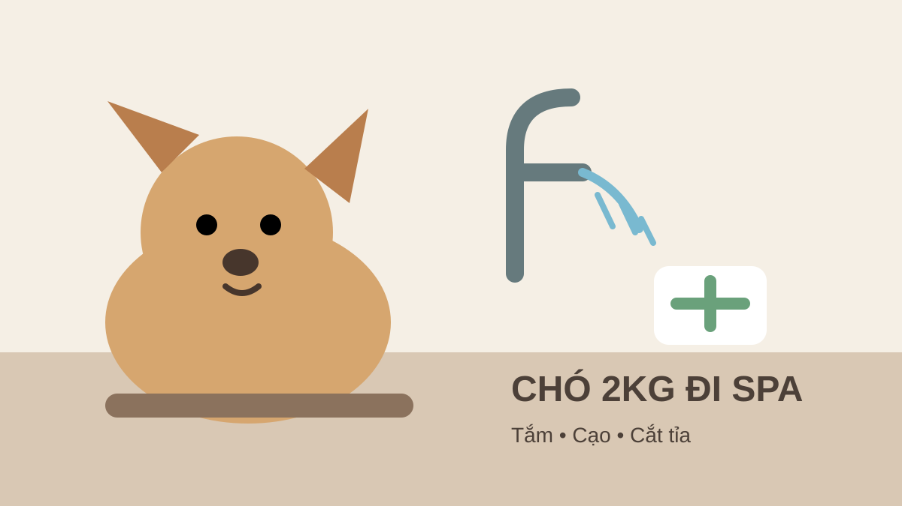

Chó 2kg đi Spa giá bao nhiêu? Tắm, cạo, cắt tỉa
Trả lời nhanh: chó 2kg thuộc nhóm dưới 3kg trong bảng giá Lumi Pet. Giá cơ bản hiện được niêm yết là 120.000đ tắm vệ sinh, 180.000đ tắm + cạo và 260.000đ tắm + cắt tỉa.

Bảng giá Spa cho chó 2kg tại Lumi Pet
Mốc 2kg nằm rõ trong nhóm dưới 3kg. Vì vậy, nếu cân nặng thực tế của bé là 2kg, bạn có thể dùng nhóm giá này để dự trù chi phí trước khi đặt lịch.
| Gói | Giá chó 2kg | Phù hợp khi |
|---|---|---|
| Tắm vệ sinh | 120.000đ | Cần làm sạch và chăm sóc vệ sinh cơ bản |
| Tắm + cạo | 180.000đ | Đã xác định nhu cầu cạo lông phù hợp |
| Tắm + cắt tỉa | 260.000đ | Muốn chỉnh form, độ dài và ngoại hình bộ lông |
Đây là dữ liệu từ bảng giá Spa thú cưng Lumi Pet. Nếu cân nặng thực tế sát mốc 3kg, nên cân lại trước khi chốt để áp đúng nhóm giá.
Chó 2kg nên chọn tắm vệ sinh, tắm cạo hay cắt tỉa?
Tắm vệ sinh: khi mục tiêu chính là sạch sẽ
Nếu bộ lông đang ở trạng thái ổn, không cần thay đổi kiểu hoặc độ dài, gói tắm vệ sinh là lựa chọn trực tiếp nhất. Bạn có thể xem thêm so sánh tắm vệ sinh và tắm cạo trước khi quyết định.
Tắm + cạo: không nên chọn chỉ vì muốn “gọn nhanh”
Việc có nên cạo hay không còn phụ thuộc loại lông, tình trạng da và mục tiêu chăm sóc. Khi chưa chắc, hãy mô tả giống chó, tình trạng lông và mong muốn để nhân viên tư vấn trước khi thực hiện.
Tắm + cắt tỉa: khi cần chỉnh form bộ lông
Gói này phù hợp khi mục tiêu là tạo lại đường nét hoặc rút ngắn lông có kiểm soát. Với chó nhỏ, tình trạng rối lông vẫn cần được kiểm tra riêng thay vì mặc định đã nằm trong giá cắt tỉa.
Giá 120.000–260.000đ có phải giá cuối cùng?
Ba mức trên là giá gói cơ bản theo cân nặng. Bảng giá Lumi Pet hiện có các mục phụ thu riêng khi áp dụng, gồm gỡ rối lông, tạo kiểu đặc biệt, sữa tắm chuyên dụng hoặc trường hợp bé khó hợp tác. Vì vậy, bài này không cộng một con số phụ thu giả định vào giá chó 2kg.
Riêng gỡ rối lông được niêm yết theo khoảng và nhân viên báo trước. Nếu lông bé đang vón hoặc bết, xem thêm bài gỡ rối lông chó giá bao nhiêu.
Vì sao cần cân đúng trước khi đặt Spa?
Bảng giá chó được chia theo các khoảng cân nặng. Với chó 2kg, việc xác định “dưới 3kg” khá rõ. Nhưng nếu bé tăng cân và tiến gần 3kg, cân lại giúp tránh hiểu nhầm giữa hai nhóm giá. Khi gửi thông tin đặt lịch, nên kèm cân nặng gần nhất, giống chó, tình trạng lông và dịch vụ mong muốn.
Đặt Spa cho chó 2kg thế nào?
Bạn có thể mở trang Đặt lịch Spa, xem dịch vụ Spa thú cưng Bình Thạnh hoặc dịch vụ Grooming. Nếu cần xác nhận nhanh tình trạng lông hoặc gói phù hợp, dùng trang Liên hệ Lumi Pet để Gọi/Zalo trước khi đến.
Câu hỏi thường gặp
Chó đúng 2kg thuộc nhóm giá nào?
Thuộc nhóm dưới 3kg.
Chó 2kg tắm vệ sinh giá bao nhiêu?
Giá cơ bản đang niêm yết là 120.000đ.
Chó 2kg tắm và cắt tỉa giá bao nhiêu?
Giá cơ bản đang niêm yết là 260.000đ.
Có thể phát sinh thêm phí không?
Có thể nếu thực tế có hạng mục phụ thu theo bảng giá. Lumi Pet cần xác nhận trường hợp cụ thể; bài này không tự giả định phụ thu.
Bài liên quan
Chó 3kg đi Spa giá bao nhiêu? · Chó 4kg đi Spa giá bao nhiêu? · Checklist trước khi đặt lịch Spa · Bảng giá Spa đầy đủ